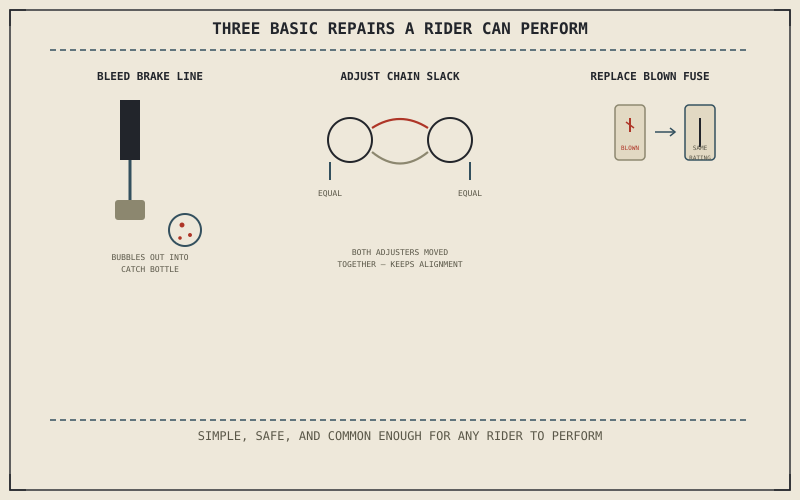

Chapters 11.1 through 11.9 built the skill of confirming a cause. Confirming a cause and repairing it aren't automatically the same skill, but a small number of repairs are simple, safe, and common enough that every rider benefits from being able to perform them directly, without a shop visit, once Chapter 11.1's confirmation step has actually named the cause.
Chapter 11.9 closed by pointing here — from diagnosis toward repair, now that every system in this part has a confirmed cause behind whatever symptom led to it. This chapter covers three of the most common repairs a rider can perform directly.
Bleeding Air From the Brake Line
Chapter 11.1 opened this entire part with a spongy brake lever and air in the line as one of its three possible causes. Bleeding removes that air directly: with a catch bottle connected to the caliper's bleed valve, the lever is pumped and held while the valve is briefly opened, releasing pressurized fluid and any trapped air into the bottle before the valve is closed again ahead of releasing the lever — repeated until the fluid emerging is clear of bubbles and the lever returns to Chapter 11.1's firm, non-spongy feel. This is the repair Chapter 11.1's founding example was building toward all along.
Adjusting Chain Slack
Chapter 10.4 established chain slack's direct connection to suspension travel, and correcting it once it's drifted out of range is a routine adjustment rather than a repair requiring new parts. Loosening the rear axle nut and turning each side's chain adjuster by equal amounts keeps the wheel square in the swingarm as the axle moves back, preventing the alignment problem Chapter 6.7 described as a distinct wear story from developing as a side effect of the adjustment itself. Slack should be checked at the tightest point in the chain's rotation, since chain wear is rarely perfectly even, before the axle nut is finally retightened to its specified torque.
Bleeding a spongy lever and adjusting chain slack are the same two examples Chapters 11.1 and 10.4 already built the diagnostic case for — this chapter is where that earlier groundwork finally turns into an actual repair.

A diagram showing three basic repairs a rider can perform directly: bleeding air from a brake line through a caliper bleed valve, adjusting chain slack evenly at both axle adjusters, and replacing a blown fuse identified by its broken filament.
Replacing a Blown Fuse
Chapter 11.4 covered charging and electrical faults that develop gradually, but a fuse blowing is a sudden, protective failure by design — it's meant to sacrifice itself to protect the rest of the circuit from a current surge. A blown fuse shows a visibly broken filament inside its housing and is replaced directly with another of the identical amperage rating from the fuse box, restoring whatever circuit lost power. A replacement fuse that blows again immediately, rather than lasting normally, is itself a new symptom — one that sends the search back to Chapter 11.4's electrical fault diagnosis rather than being solved by fuse replacement alone.
A Common Misconception, Cleared Up Early
It's a common assumption that confirming a cause, as Chapters 11.1 through 11.9 taught, automatically means the repair itself is something any rider should attempt. A warped disc needing resurfacing, a wheel bearing needing a press to seat correctly, or a gearbox dog needing the case split open all have clearly confirmed causes by this part's methods, but none of them are simple, low-risk repairs the way bleeding a brake line or adjusting chain slack are. Correctly diagnosing a cause is valuable on its own even when the repair itself belongs with a professional, since it prevents unnecessary guesswork — and unnecessary cost — once the bike actually reaches the shop.
Where This Leads
Every system this book has described now has both a diagnostic method and, for the simplest cases, a direct repair behind it. Chapter 11.11 closes this part by returning diagnosis and repair to the whole-system view this book opened with.
Key Concepts to Remember
- Bleeding a brake line, repeated until fluid runs clear of bubbles, directly repairs the air-in-the-line cause Chapter 11.1 opened this part with.
- Adjusting chain slack evenly at both axle adjusters corrects tension without introducing the alignment problem Chapter 6.7 described.
- Confirming a cause doesn't automatically mean the repair itself is simple — some confirmed causes still belong with a professional.
Cross-References
| ← Ch. 11.1 | Used air in the brake line as one cause of a spongy lever; this chapter delivers the bleeding procedure that repairs that exact cause. |
| ← Ch. 10.4 | Established chain slack's connection to suspension travel; this chapter delivers the adjustment procedure that keeps that slack in range. |
| ← Ch. 11.4 | Covered gradual charging and electrical faults; this chapter treats a fuse that blows again immediately as a new symptom pointing back to that diagnosis. |
| → Ch. 11.11 | Closes Part XI by returning diagnosis and repair to the whole-system view this book opened with. |